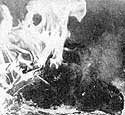
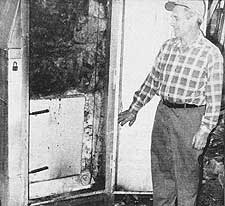
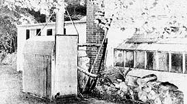
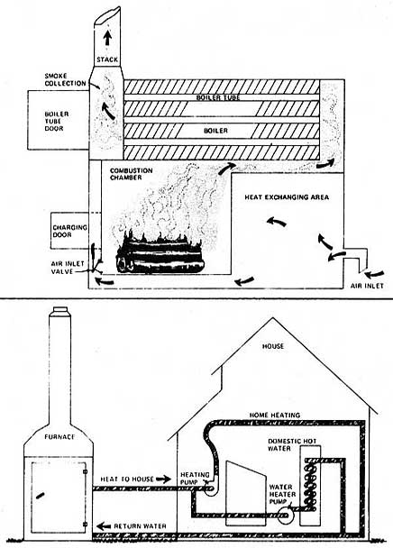
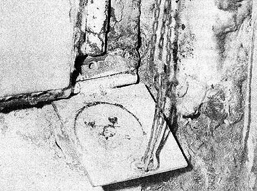

How would you like to invest $50 and some spare time in the construction of a wood-burning furnace . . . if that investment would save you at least $600 a year, every year, from now on? That's what Marcus Ashley of Freetown, Massachusetts has done . . . and here's how he did it.
Marcus Ashley's solution to the skyrocketing cost of home heating oil is the "overgrown doghouse with a smokestack" that sits in his backyard. Because, that doghouse is really a scrap wood-fired furnace that provides Marc and his wife with all the hot water they can use, keeps their Massachusetts home at a constant and comfortable 68° F, and warms a greenhouse that's attached to the residence.
"Everybody told me this setup wouldn't work the way I thought it would," grins Marc, "and maybe they were right. After all, on really cold days I do have to go out once in a while and throw in an extra stick of wood. But I guess it works well enough."
"Well enough" is an understatement. Ashley's homemade furnace is actually an extremely efficient "self-regulating, controlled combustion chamber" marvel that incorporates a number of ingenious features.
The heart of the wood-burner is a heavily insulated industrial oven salvaged from a capacitor factory. The water boiler?also salvaged-which is positioned directly over this firebox is also heavily insulated. As a matter of fact, the whole outdoor furnace is enclosed so efficiently that, even in the dead of winter when the furnace is fully stoked, not enough heat escapes from the "overgrown doghouse" to melt the snow on the little building's roof!
Ah, but Marc Ashley's woodburner has other secrets too. The furnace's water boiler, for instance, contains a mechanical thermostat which controls the amount of air that can flow into the firebox below. As the temperature within the boiler drops toward 160° F, the air inlet on the firebox is opened . . . which increases the rate of combustion in the old oven and delivers more heat to the water circulating through the boiler. And, as the temperature in the water-filled tank rises toward 160° F, the air inlet is progressively closed . . . which slows the burning process and thereby limits the heat which reaches the boiler.
Actually, there's more to the regulation of the combustion that takes place in Marc's furnace than even the above paragraph indicates. Because the flow of air through the unit's firebox is so precisely con trolled, you see . . . that, under normal conditions, the wood within never really bursts into flame. It only smolders, slowly turns to charcoal, and is almost completely converted into usable Btu's.
And then, as might be expected, Marc Ashley's furnace is just as miserly with those usable Btu's as it is with the smoldering fuel that produces 'em. For one thing, all the inlet air that eventually enters the firebox (as described in the last two paragraphs) must first pass through a "heat exchanger"?a completely enclosed area behind and under the combustion chamber?before getting into the oven where burning takes place. This, of course, prewarms the inlet air and?to a certain extent-recycles heat right back into the firebox as fast as it radiates from the combustion chamber's surface.
As the prewarmed inlet air is then further heated by the intensely smoldering wood in Marc Ashley's furnace, it rises and flows through another heat exchange area directly under the stove's water boiler. This transfers a certain amount of warmth to the water circulating in the boiler before the hot gases from the smoldering coals even pass into the boiler's fire tubes. Result: improved efficiency once again. By the time the fire's hot gases have flowed under the boiler and then through its fire tubes to the furnace's exhaust stack . . . they contain very little more than enough heat energy to get them up and out of the chimney.
In fact, believe it or not, 5o little heat escapes up the chimney that Marc had to insulate the stack to keep the moisture in the exhausting gases from condensing before they could get out. "The exhaust gases were cooling right inside the stack," Ashley says, "and you could see the condensed water dripping down inside the pipe. I was afraid all that water would rust it out, so I insulated the pipe heavily enough to stop the condensation. And it worked. The furnace's exhaust can get all the way up and out of the stack now-carrying its water vapor with it?and I don't have any more condensation problems."
Once Marc's super-efficient furnace has turned its supply of wood into hot gas and then transferred the gas's heat to water, the rest is easy. That hot water is just circulated through heaters in the Ashley house and greenhouse to warm both structures.
Mr. Ashley also runs some of his furnace's 160?180° water through a set of coils that he welded into the insulated copper storage tank salvaged from an old water heater. According to the Ashleys, this provides "more than enough" hot water for all their domestic needs.
Two of Marc's three sons are building contractors and the scrap wood they bring him goes a long way toward supplying his yearly heating needs. Recycled lumber that Ashley picks up himself and deadfalls from his heavily wooded property provide the rest. As Ashley notes: "We hold our house at a constant 68°?the same temperature we liked before the oil embargo?at very little cost."
Marc, grinning as usual, goes on to point out the ease with which he keeps his woodburner running. "Since my furnace is located outdoors the way it is, I never have to carry fuel down into the cellar and haul ashes back up the basement stairs the way most folks with a wood furnace have to. I just stack my logs out back of the house any which way, and they're always right there where I want 'em when it's time to feed the stove. I like to burn softwood during the day and hardwood?which heats longer?at night. It's only in the very coldest weather that I'll throw in an extra stick or two from time to time in addition to my regular twice-a-day stokings."
Steven, one of Ashley's sons, adds: "Dad's furnace holds between five and eight cubic feet of wood and he really needs to fill it only once a day. But he likes to toss in a little something extra when he puts the cats out at night and whenever he wants to feel useful around the place."
Problems? Marc's had a couple of minor ones with his wood-burner. Once, when he'd been loading the furnace with wet chips and logs for several days, he and his wife woke up one morning to find their house had "hazardously" cooled all the way down to 65° in the night. "That damp wood had coated up the stove's chimney with a creosote-like substance," says Ashley, "and the furnace wasn't drawing properly. You can bet your boots I cleaned it out in a hurry."
The second problem hasn't been any worse than the first one. The Ashleys keep their furnace burning right through the summer (with the space heaters in the house shut down, of course) to supply them with hot water for bathing, washing dishes, etc. And once in a while, when they have a bedroom window open on the second floor, a little smoke from the wood-burner comes into the house. "One of these days," says Marc, "I'm gonna move that furnace further away from the building."
It may be some time, however, before that little job gets taken care of. For, encouraged by the success of his $50 homebuilt wood-burner (it saves him $600 a year in fuel oil bills), Marcus Ashley is now experimenting with solar heaters, windplants, and other "alternative" energy devices. And, knowing this guy the way I now know him, I'm betting that Marc's future experiments turn out just as good as this first one has.
|
 DANA R. ROWE These schematic diagrams show the relative positions of the furnace :s working part, and the manner in which boiler-warmed crater is routed between-furnace, house, and hot realer healer. |
 A close-up view of the circular air inlet calve. When heal demand is tort, the valve closes against the air inlet tube (as shown here), choking off the fire. |
 |
|
 |
 |
|